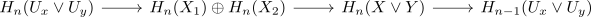
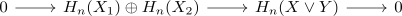

singular homology of a wedge product of locally pointed contractible spaces
Proposition
Let $X,Y$ be based spaces, such that there exists pointed contractible neighbourhoods $U_x,U_y$ of the base points. Then for the wedge product and singular homology, it holds, that
\begin{align*}
H_n(X \vee Y) \cong H_n(X) \oplus H_n(Y)
\end{align*}
Proof
Consider the sets $X \vee U_y, Y \vee U_x$. These are an open cover by the definition of the quotient topology.
By mayer vietoris for singular homology, there exists a long exact sequence

Here $U_x \vee U_y$ is pointed contractible (cf. wedge product of pointed contractible spaces as contractible space), therefore we get

Therefore by short exact sequence and isomorphism, we get the isomorphism
\begin{align*}
H_n(X_1) \oplus H_n(X_2) \cong H_n(X \vee Y)
\end{align*}